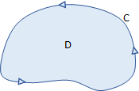

Green's Theorem
Green's Theorem gives us a relationship between the line integral over a curve and the double integral of the region bounded within the curve. Recall the terms from the previous lesson.
- A region is simply connected if it doesn't have holes or breaks.
- A simple curve does not intersect itself.
- A curve is closed if it starts and ends at the same point.
- A smooth curve does not have any cusps or sharp corners, and its derivative is continuous.
- A curve is piecewise smooth if it can be described as a finite set of smooth curves.
In addition, we can also talk about the orientation of a curve, which refers to the direction that the curve is drawn or generated. We usually define a curve \(C\) to have a positive orientation if it is traversed one time in the counterclockwise direction. The region \(D\) below is simply connected and it is bounded by a simple, closed, positively oriented, piecewise smooth curve \(C\). Notice that \(D\) is to the "left" of \(C\) as you travel around the curve.

Greens' Theorem for Line Integrals: Let \(D\) be a simply connected region in the \(xy\)-plane bounded by a simple, closed, positively oriented, piecewise smooth curve \(C\). If \(\vec{F} = \langle P,Q \rangle\) where \(P\) and \(Q\) have continuous first partial derivatives in \(D\), then the line integral of the vector field \(\vec{F}\) over the curve \(C\) is equal to the curl inside the region bounded by \(C\).
\[\underset{C}{\mathop \oint}\, \vec{F} \cdot d\vec{r} = \underset{C}{\mathop \oint}\, P~dx + Q~dy = \underset{D}{\mathop \iint}\, \left( \frac{\partial Q}{\partial x} -\frac{\partial P}{\partial y} \right)~dA\]The symbol \(\mathop \oint \) is often used to express that \(C\) is a closed curve. The left part of the above formula is the line integral of the vector field \(\vec{F}\) over the curve \(C\). The middle portion is an alternate way to express the line integral, being the result of the dot product. The right portion says that the line integral is equal to the double integral of the curl of \(\vec{F}\) over the region \(D\). In other words, the circulation along the boundary curve is equal to the curl inside the region bounded by the curve. We will look more at curl on the next page. For now, let's just say the following.
- If the curl is 0 throughout the region \(D\), then we say the field \(\vec{F}\) is irrotational on \(D\), meaning the field does not rotate or cause spin on \(D\).
- The curl of a closed curve on a conservative field is 0.
The next video gives an example where the given curve has a negative orientation.
We can also use Green's Theorem to compute the area of a region. Assuming we have a region \(D\) and curve \(C\) that satisfy the requirements for Green's Theorem, the area of \(D\) can be computed using any of the following integrals.
The first two parts of this formula represent a line integral that can be expressed in terms of \(x\) only or in terms of \(y\) only, respectively. The right part represents a line integral with respect to both \(x\) and \(y\), which is typically what we deal with.